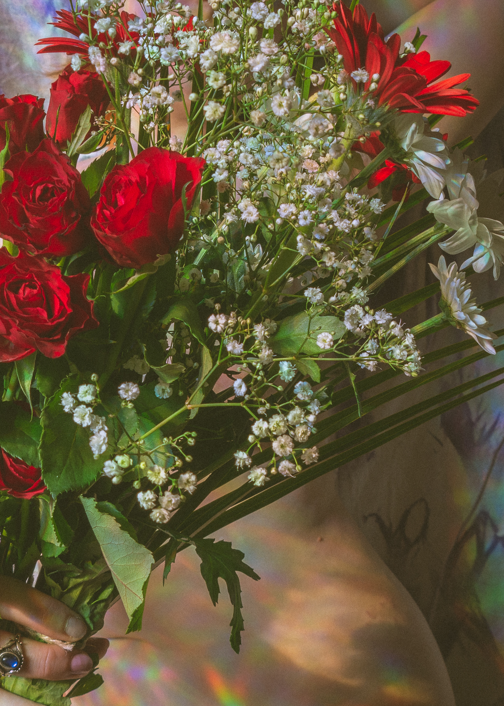
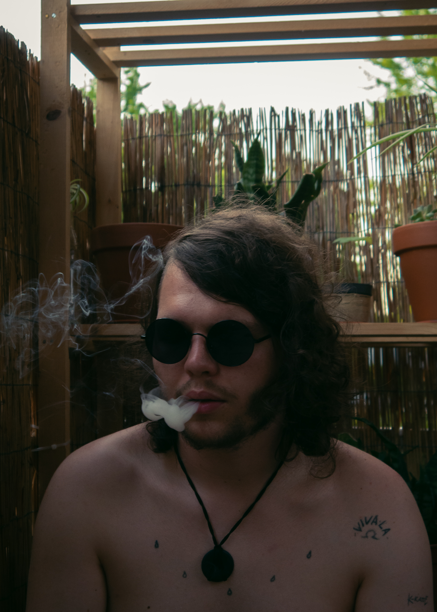

Urban & Documentary Photography
"Capturing people's lives in the brutalist environment of our cities is the most artful contrast you can find just by looking at everyday life."
Erotic & Portrait Photography
"There is something so beautiful about the nude body that shows again that humans themself are art, it just needs to be captured the right way."
- MY WORK -



See more in my portfolio.